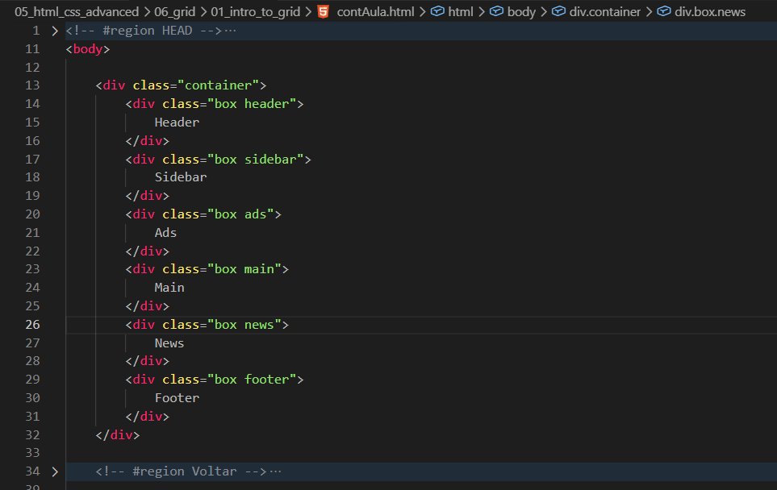
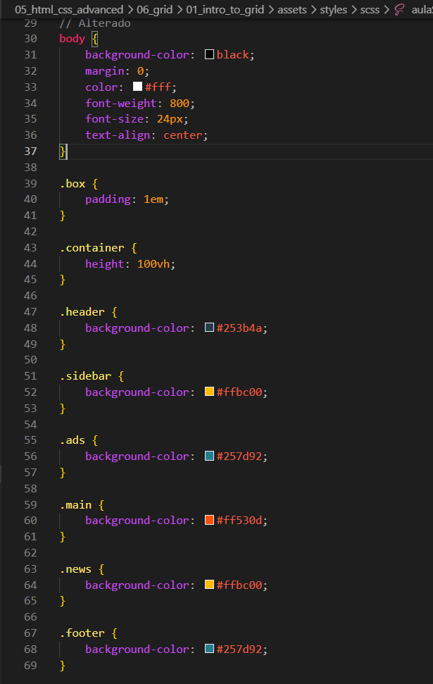
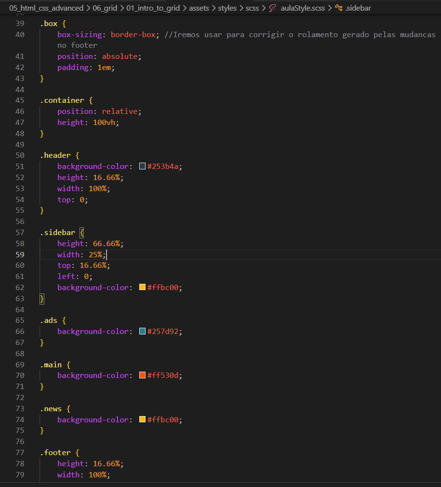
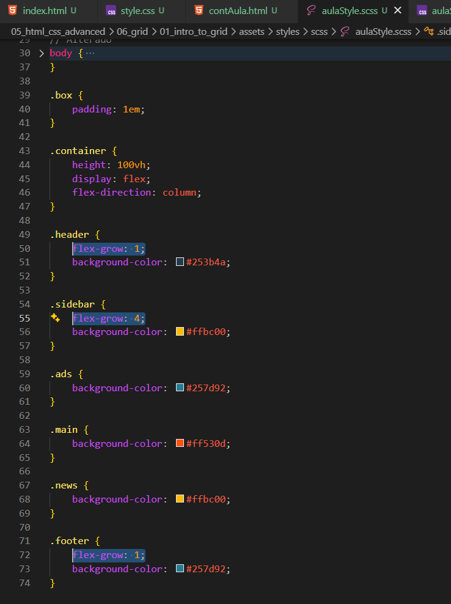
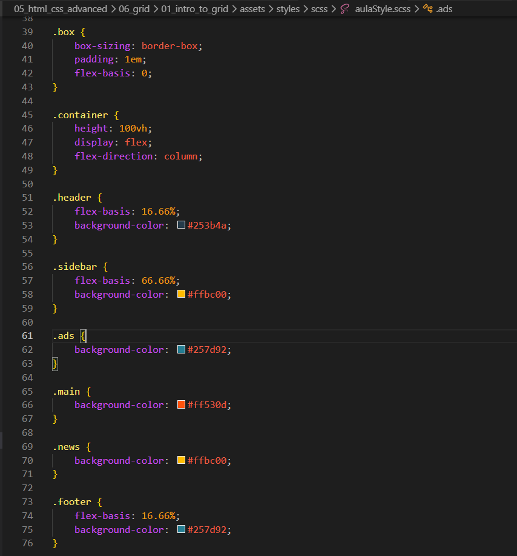
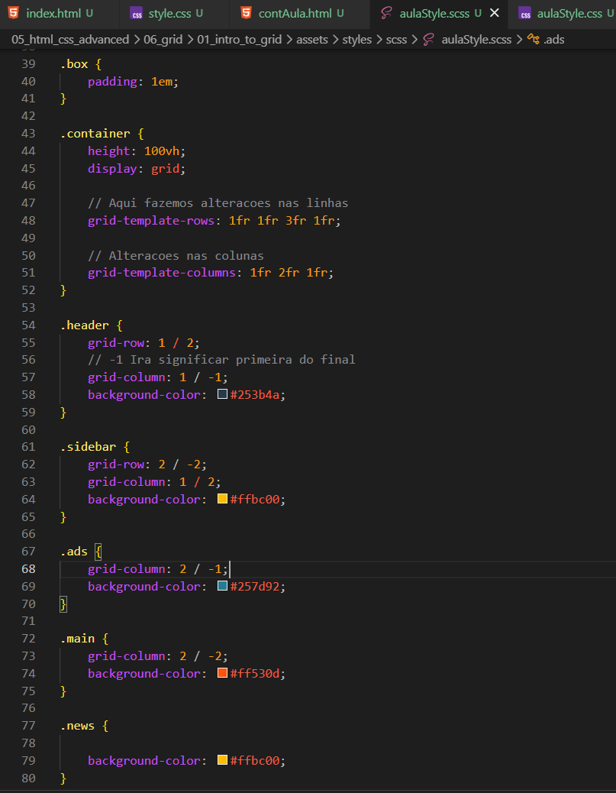
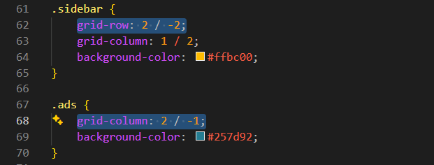

Intro to Grid
Intro
Agora iremos aprender grid.
Agora iremos aprender grid.
HTML:

CSS:

Para iniciar adicionamos um position: relative; para nosso container, para que todo posicionamento seja relativo a ele.
position: relative
Explicando posicionamento relativo: position: relative em um elemento normalmente é usado para criar um ponto de referência para os elementos filhos que usam position: absolute.
Sem isso, um elemento absoluto procura outro elemento acima dele na hierarquia para usar como referência. Se não encontrar nenhum, ele se posiciona em relação à página inteira.
O principal benefício é poder controlar exatamente onde os elementos absolutos aparecerão dentro de um componente específico, sem que eles acabem indo para lugares inesperados da tela.
Um elemento com position: absolute procura o ancestral mais próximo que tenha um position diferente de static (relative, absolute, fixed ou sticky)

Aqui podemos observar que fizemos várias modificações em porcentagem %, para tentarmos dar mais responsividade, porem ainda nao funciona como desejamos, pois se diminuirmos muito, ainda havera quebras em nossos elementos. Quando elementos absolutos se comportam dessa forma quando comecam a ficar sem espaco, acabam sobrepondo outros elementos.
Para resolvermos esse problema, poderiamos usar calculos, porem deixaria nosso codigo mais complexo.
Agora iremos ver se fizermos modificacoes com o display: flex;.
Iremos começar a adicionar um display: flex; em nosso container com um flex-direction: column; para deixa-los em colunas.
Agora iremos adicionar um flex-grow.
flex-grow define quanto um item flex pode crescer dentro do espaço disponível no container. Quando o container tem espaço sobrando, ele distribui esse espaço entre os itens que têm flex-grow.
Uso Prático flex-grow

flex-basis define o tamanho inicial de um item antes de crescer ou encolher dentro do flex container.
Uso Prático:
Mesmo usando esse método ainda teremos o mesmo problema, teríamos que usar calculos complexos para chegar onde desejamos.

Código de exemplo:

Define quantas colunas a grade terá e o tamanho de cada uma.
Exemplos de uso:
Define quantas linhas a grade terá e o tamanho de cada uma.
Exemplos de uso:
grid-row e grid-column servem para dizer onde um elemento começa e onde termina dentro da grade.

Significa:
A parte importante dos números negativos é:
Por exemplo:
O principal benefício é que você não precisa saber exatamente quantas colunas ou linhas existem para posicionar um elemento próximo ao final da grid.
Resumo:
Valores positivos contam do início da grid para o fim.
Valores negativos contam do fim da grid para o início.
-1 é a última linha da grid, -2 a penúltima e assim por diante.